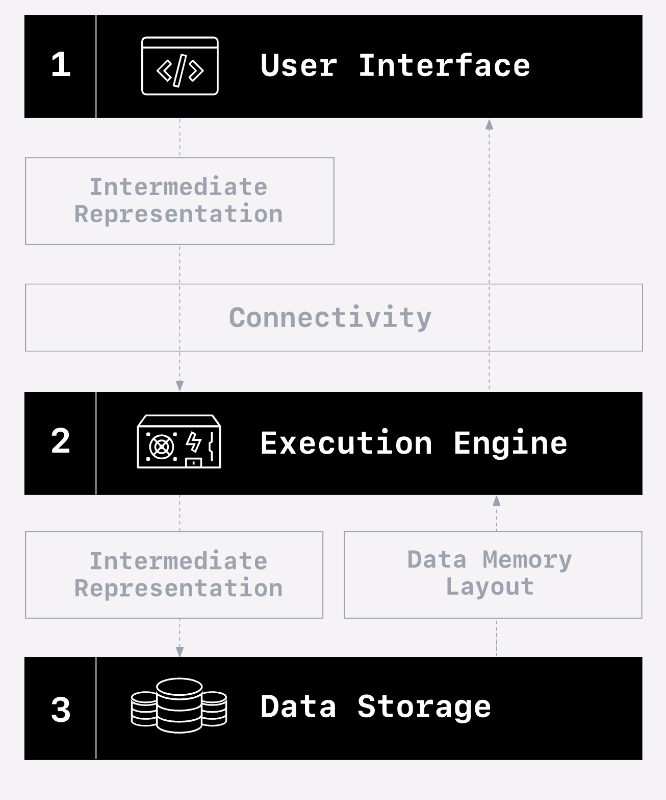

┏━━━━━━━━━┳━━━━━━━━━━━┳━━━━━━━━━━━━━━━━┳━━━━━━━━━━━━━━━┳━━━━━━━━━━━━━━━━━━━┳━━━━━━━━━━━━━┳━━━━━━━━┳━━━━━━━┓ ┃ species ┃ island ┃ bill_length_mm ┃ bill_depth_mm ┃ flipper_length_mm ┃ body_mass_g ┃ sex ┃ year ┃ ┡━━━━━━━━━╇━━━━━━━━━━━╇━━━━━━━━━━━━━━━━╇━━━━━━━━━━━━━━━╇━━━━━━━━━━━━━━━━━━━╇━━━━━━━━━━━━━╇━━━━━━━━╇━━━━━━━┩ │ string │ string │ float64 │ float64 │ int64 │ int64 │ string │ int64 │ ├─────────┼───────────┼────────────────┼───────────────┼───────────────────┼─────────────┼────────┼───────┤ │ Adelie │ Torgersen │ 39.1 │ 18.7 │ 181 │ 3750 │ male │ 2007 │ │ Adelie │ Torgersen │ 39.5 │ 17.4 │ 186 │ 3800 │ female │ 2007 │ │ Adelie │ Torgersen │ 40.3 │ 18.0 │ 195 │ 3250 │ female │ 2007 │ │ Adelie │ Torgersen │ NULL │ NULL │ NULL │ NULL │ NULL │ 2007 │ │ Adelie │ Torgersen │ 36.7 │ 19.3 │ 193 │ 3450 │ female │ 2007 │ │ Adelie │ Torgersen │ 39.3 │ 20.6 │ 190 │ 3650 │ male │ 2007 │ │ Adelie │ Torgersen │ 38.9 │ 17.8 │ 181 │ 3625 │ female │ 2007 │ │ Adelie │ Torgersen │ 39.2 │ 19.6 │ 195 │ 4675 │ male │ 2007 │ │ Adelie │ Torgersen │ 34.1 │ 18.1 │ 193 │ 3475 │ NULL │ 2007 │ │ Adelie │ Torgersen │ 42.0 │ 20.2 │ 190 │ 4250 │ NULL │ 2007 │ │ … │ … │ … │ … │ … │ … │ … │ … │ └─────────┴───────────┴────────────────┴───────────────┴───────────────────┴─────────────┴────────┴───────┘
Ibis @ LinkedIn
Portable Python DataFrames
Chloe He
Phillip Cloud
2024-04-24
Who
Phillip Cloud
- Principal engineer at Voltron Data
- Python analytics for 10+ years
- Open source
- Tech lead for Ibis
Chloe He
- Founding engineer at Claypot → Senior engineer at Voltron Data
- Infrastructure for real-time ML
- Ibis streaming
What
Ibis is a Python library for:
- Exploratory data analysis
- General analytics
- Data engineering
- ML preprocessing
- Library: (e.g., Google BigFrames)
- Build your own … Ibis (??)
💡 Development to production with few rewrites
Examples
Examples
https://ibis-project.org/tutorials/getting_started
penguins.group_by("species", "island").agg(
n=penguins.count(),
avg_bill_mm=penguins.bill_length_mm.mean(),
med_flipper_mm=penguins.flipper_length_mm.median()
)┏━━━━━━━━━━━┳━━━━━━━━━━━┳━━━━━━━┳━━━━━━━━━━━━━┳━━━━━━━━━━━━━━━━┓ ┃ species ┃ island ┃ n ┃ avg_bill_mm ┃ med_flipper_mm ┃ ┡━━━━━━━━━━━╇━━━━━━━━━━━╇━━━━━━━╇━━━━━━━━━━━━━╇━━━━━━━━━━━━━━━━┩ │ string │ string │ int64 │ float64 │ float64 │ ├───────────┼───────────┼───────┼─────────────┼────────────────┤ │ Adelie │ Torgersen │ 52 │ 38.950980 │ 191.0 │ │ Adelie │ Biscoe │ 44 │ 38.975000 │ 189.5 │ │ Adelie │ Dream │ 56 │ 38.501786 │ 190.0 │ │ Gentoo │ Biscoe │ 124 │ 47.504878 │ 216.0 │ │ Chinstrap │ Dream │ 68 │ 48.833824 │ 196.0 │ └───────────┴───────────┴───────┴─────────────┴────────────────┘
cols = {
c: penguins[c] - penguins[c].mean()
for c in penguins.columns
if penguins[c].type().is_numeric() and c != "year"
}
expr = penguins.group_by("species").mutate(**cols).head(5)
expr┏━━━━━━━━━┳━━━━━━━━┳━━━━━━━━━━━━━━━━┳━━━━━━━━━━━━━━━┳━━━━━━━━━━━━━━━━━━━┳━━━━━━━━━━━━━┳━━━━━━━━┳━━━━━━━┓ ┃ species ┃ island ┃ bill_length_mm ┃ bill_depth_mm ┃ flipper_length_mm ┃ body_mass_g ┃ sex ┃ year ┃ ┡━━━━━━━━━╇━━━━━━━━╇━━━━━━━━━━━━━━━━╇━━━━━━━━━━━━━━━╇━━━━━━━━━━━━━━━━━━━╇━━━━━━━━━━━━━╇━━━━━━━━╇━━━━━━━┩ │ string │ string │ float64 │ float64 │ float64 │ float64 │ string │ int64 │ ├─────────┼────────┼────────────────┼───────────────┼───────────────────┼─────────────┼────────┼───────┤ │ Gentoo │ Biscoe │ -1.404878 │ -1.782114 │ -6.186992 │ -576.01626 │ female │ 2007 │ │ Gentoo │ Biscoe │ -3.004878 │ -0.282114 │ -3.186992 │ -226.01626 │ female │ 2009 │ │ Gentoo │ Biscoe │ 1.195122 │ -0.882114 │ -7.186992 │ -626.01626 │ female │ 2007 │ │ Gentoo │ Biscoe │ 2.495122 │ 0.217886 │ 0.813008 │ 623.98374 │ male │ 2007 │ │ Gentoo │ Biscoe │ 0.095122 │ -0.482114 │ -2.186992 │ 323.98374 │ male │ 2007 │ └─────────┴────────┴────────────────┴───────────────┴───────────────────┴─────────────┴────────┴───────┘
Let’s talk about SQL
SQL
SELECT
"t0"."species",
"t0"."island",
"t0"."bill_length_mm" - AVG("t0"."bill_length_mm") OVER (PARTITION BY "t0"."species" ROWS BETWEEN UNBOUNDED PRECEDING AND UNBOUNDED FOLLOWING) AS "bill_length_mm",
"t0"."bill_depth_mm" - AVG("t0"."bill_depth_mm") OVER (PARTITION BY "t0"."species" ROWS BETWEEN UNBOUNDED PRECEDING AND UNBOUNDED FOLLOWING) AS "bill_depth_mm",
"t0"."flipper_length_mm" - AVG("t0"."flipper_length_mm") OVER (PARTITION BY "t0"."species" ROWS BETWEEN UNBOUNDED PRECEDING AND UNBOUNDED FOLLOWING) AS "flipper_length_mm",
"t0"."body_mass_g" - AVG("t0"."body_mass_g") OVER (PARTITION BY "t0"."species" ROWS BETWEEN UNBOUNDED PRECEDING AND UNBOUNDED FOLLOWING) AS "body_mass_g",
"t0"."sex",
"t0"."year"
FROM "penguins" AS "t0"
LIMIT 5Back to examples…
ibis-analytics
Why?
DataFrame lore
- DataFrames appear in the
Sprogramming language, which evolves into theRcalculatorprogramming language. pandasperfects the DataFrame in Python … or did it?- Dozens of Python DataFrame libraries appear and disappear…
- pandas is the de facto standard for Python DataFrames. It still doesn’t scale.
- Leads to data scientists throwing code over the wall to engineers.
- What if Ibis were a new standard?
The legal dept requires this slide

Ibis origins
from Apache Arrow and the “10 Things I Hate About pandas†by Wes McKinney
…in 2015, I started the Ibis project…to create a pandas-friendly deferred expression system for static analysis and compilation [of] these types of [query planned, multicore execution] operations. Since an efficient multithreaded in-memory engine for pandas was not available when I started Ibis, I instead focused on building compilers for SQL engines (Impala, PostgreSQL, SQLite), similar to the R dplyr package. Phillip Cloud from the pandas core team has been actively working on Ibis with me for quite a long time.
Two world problem
What does Ibis solve?
SQL:
- databases & tables
- analytics
- metrics
- dashboards
Python:
- files & DataFrames
- data science
- statistics
- notebooks
Ibis bridges the gap.
Bridging the gap
import ibis
con = ibis.duckdb.connect()
penguins = con.table("penguins")
penguins.group_by("species", "island").agg(count=ibis._.count())An embeddable, zero-dependency, C++ SQL database engine.
import ibis
con = ibis.datafusion.connect()
penguins = con.table("penguins")
penguins.group_by("species", "island").agg(count=ibis._.count())A Rust SQL query engine.
import ibis
con = ibis.clickhouse.connect()
penguins = con.table("penguins")
penguins.group_by("species", "island").agg(count=ibis._.count())A C++ column-oriented database management system.
import ibis
con = ibis.polars.connect()
penguins = con.table("penguins")
penguins.group_by("species", "island").agg(count=ibis._.count())A Rust DataFrame library.
import ibis
con = ibis.bigquery.connect()
penguins = con.table("penguins")
penguins.group_by("species", "island").agg(count=ibis._.count())A serverless, highly scalable, and cost-effective cloud data warehouse.
import ibis
con = ibis.snowflake.connect()
penguins = con.table("penguins")
penguins.group_by("species", "island").agg(count=ibis._.count())A cloud data platform.
import ibis
con = ibis.oracle.connect()
penguins = con.table("penguins")
penguins.group_by("species", "island").agg(count=ibis._.count())A relational database management system.
import ibis
con = ibis.pyspark.connect()
penguins = con.table("penguins")
penguins.group_by("species", "island").agg(count=ibis._.count())A unified analytics engine for large-scale data processing.
How does Ibis work?
This is going to be very fast 🏃💨. I will happily answer questions about it 😂.
Engineering themes
- Immutability
- Type checking
- Separation of concerns
- Extensibility
- Focus on end-user experience
- Avoid common denominator trap
- Scale up and down
Components: expressions
Expressions: interface
StringScalar,IntegerColumn,Table.sum(),.split(),.join()- No knowledge of specific operation
Operations: implementation
- Specific action: e.g.,
StringSplit - Inputs + output dtype, shape
- Used for compiler dispatch
Other goodies
- Type system
- Pattern matching
- Graph manipulation/traversal
Goal: separate API from implementation.
Components: expressions
Components: compiler
graph BT classDef white color:white; %% graph definition DatabaseTable --> species DatabaseTable --> bill_length_mm bill_length_mm --> Mean species --> Aggregate Mean --> Aggregate %% style class DatabaseTable white; class species white; class bill_length_mm white; class Mean white; class Aggregate white;
graph BT classDef white color:white; DatabaseTable2[DatabaseTable] --> species2[species] species2 --> bill_length_mm2[bill_length_mm] bill_length_mm2 --> Mean2[Mean] Mean2 --> Aggregate2[Aggregate] %% style class DatabaseTable2 white; class species2 white; class bill_length_mm2 white; class Mean2 white; class Aggregate2 white;

Components: compiler
Components: drivers
Drivers
- We have SQL at this point
- Send to DB via DBAPI:
cursor.execute(ibis_generated_sql) - (Heavily) massage the output
Ibis + Streaming
Growth of streaming
- Over 70% of Fortune 500 companies have adopted Kafka
- 54% of Databricks’ customers are using Spark Structured Streaming
- The stream processing market is expected to grow at a compound annual growth rate (CAGR) of 21.5% from 2022 to 2028 (IDC)

Batch and streaming
graph LR
subgraph " "
direction LR
A[data] --> B[batch processing] & C[stream processing] --> D[downstream]
end
In the machine learning world…
graph TB
proddata --> sampled
model --> prodpipeline
subgraph "local env"
sampled[sampled data] --> local[local experimentation]
local <--> iterate
local --> model[finally, we have a production-ready model!]
end
subgraph "prod env"
proddata[production data] --> prodpipeline[production pipelines]
end
In the machine learning world…
graph TB
proddata --> sampled
model -- "code rewrite" --> prodpipeline
linkStyle 1 color:white;
subgraph "local env"
sampled[sampled data] --> local[local experimentation]
local <--> iterate
local --> model[finally, we have a production-ready model!]
end
subgraph "prod env"
proddata[production data] --> prodpipeline[production pipelines]
end
A real-world example
Code rewrites
- From batch to streaming
- From local experimentation to production
- Backfilling a streaming feature on a batch backing table
- …
The solution…
Stream-batch unified API
- Flink SQL
- Spark DataFrame API
- …
Stream-batch unification

But it’s hard…
- Streaming is different
- Time semantics
- Long-running queries
- Sources and sinks
- …
- Less established standards in streaming syntax
Ibis streaming today
- Flink backend and RisingWave backend launched in Ibis 8.0
- Introduction of watermarks, windowed aggregations, etc in Ibis
What’s next?
- Expand support of streaming operations and syntax
- Continuously iterate on a stream-batch unified API
- More streaming backends (Spark Structured Streaming)
Towards composable data systems

Try it out now!
Install:
Then run:
┏━━━━━━━━━┳━━━━━━━━━━━┳━━━━━━━━━━━━━━━━┳━━━━━━━━━━━━━━━┳━━━━━━━━━━━━━━━━━━━┳━━━━━━━━━━━━━┳━━━━━━━━┳━━━━━━━┓ ┃ species ┃ island ┃ bill_length_mm ┃ bill_depth_mm ┃ flipper_length_mm ┃ body_mass_g ┃ sex ┃ year ┃ ┡━━━━━━━━━╇━━━━━━━━━━━╇━━━━━━━━━━━━━━━━╇━━━━━━━━━━━━━━━╇━━━━━━━━━━━━━━━━━━━╇━━━━━━━━━━━━━╇━━━━━━━━╇━━━━━━━┩ │ string │ string │ float64 │ float64 │ int64 │ int64 │ string │ int64 │ ├─────────┼───────────┼────────────────┼───────────────┼───────────────────┼─────────────┼────────┼───────┤ │ Adelie │ Torgersen │ 39.1 │ 18.7 │ 181 │ 3750 │ male │ 2007 │ │ Adelie │ Torgersen │ 39.5 │ 17.4 │ 186 │ 3800 │ female │ 2007 │ │ Adelie │ Torgersen │ 40.3 │ 18.0 │ 195 │ 3250 │ female │ 2007 │ │ Adelie │ Torgersen │ NULL │ NULL │ NULL │ NULL │ NULL │ 2007 │ │ Adelie │ Torgersen │ 36.7 │ 19.3 │ 193 │ 3450 │ female │ 2007 │ └─────────┴───────────┴────────────────┴───────────────┴───────────────────┴─────────────┴────────┴───────┘
Questions?
Where to find us
Links
- GitHub: https://github.com/ibis-project/ibis
- Site: https://ibis-project.org
- Installation: https://ibis-project.org/install
- Tutorial: https://ibis-project.org/tutorials/getting_started
- This talk: https://ibis-project.org/presentations/linkedin-meetup-2024-04-24